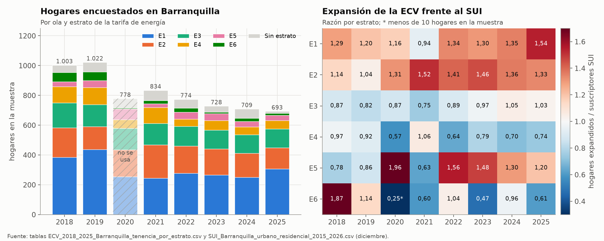
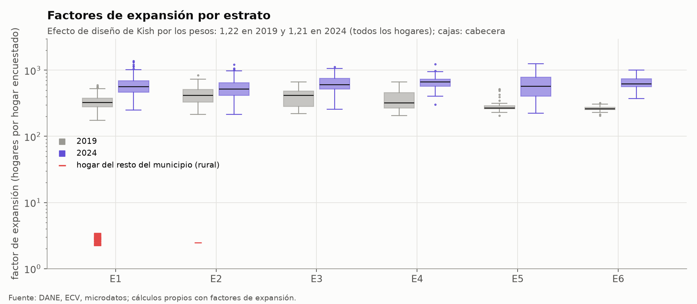
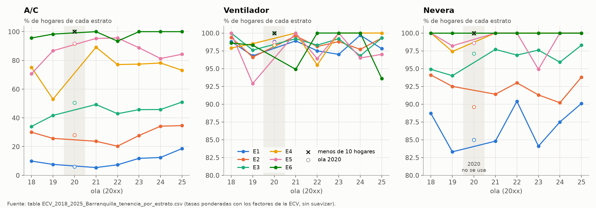
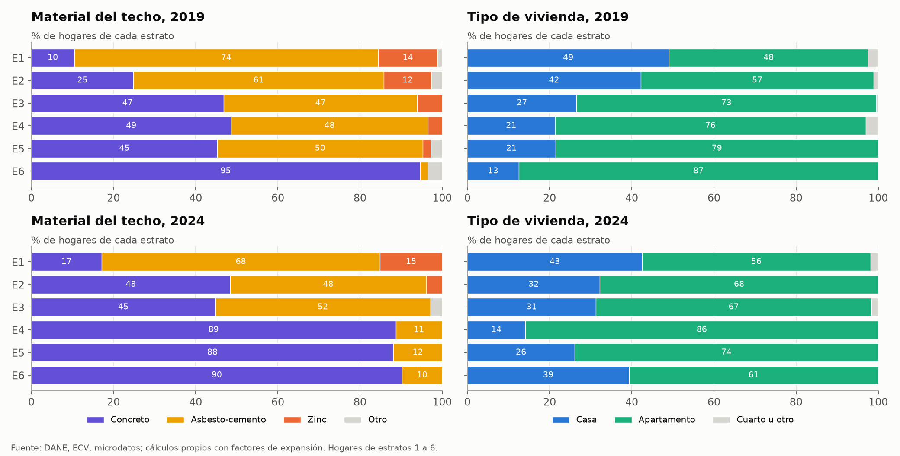
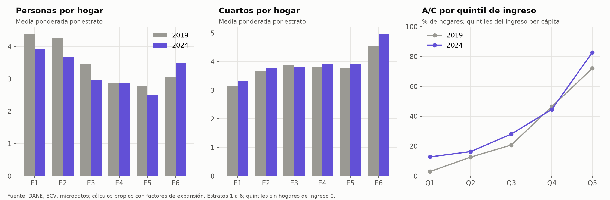
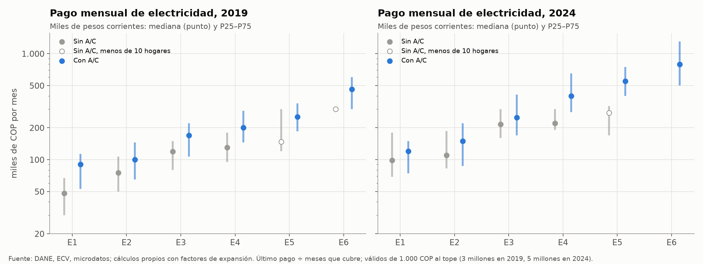
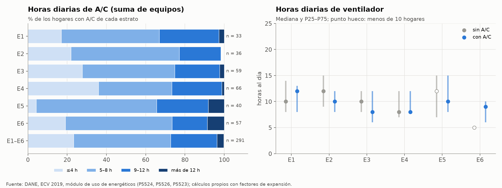
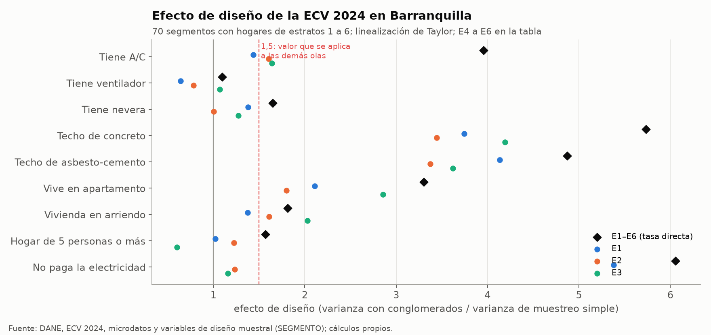

Encuesta de Calidad de Vida (ECV)#
La Encuesta de Calidad de Vida del DANE es la fuente de la tesis sobre los equipos de los hogares de Barranquilla, sobre todo el aire acondicionado (A/C), y sobre las características de la vivienda y del hogar que acompañan esa tenencia. De ella salen la serie de tenencia de A/C por estrato y año, la tenencia de ventilador y nevera, el material del techo y su efecto sobre el A/C, las personas y los cuartos por hogar y las horas de uso del A/C y del ventilador. Este capítulo describe la encuesta, muestra su análisis exploratorio en Barranquilla y explica paso a paso cómo se convierte en esos insumos. Las cifras salen de scripts/eda/ecv.py, que lee los microdatos de las olas 2019 y 2024 directamente de los zip del DANE y escribe las figuras figuras/eda/ecv_*.png y las tablas tablas/eda/ecv_*.csv. Las demás olas (2018, 2020 a 2023 y 2025) no tienen microdatos en el equipo de trabajo, así que para ellas el capítulo usa las tablas agregadas del repositorio, en particular tablas/ECV_2018_2025_Barranquilla_tenencia_por_estrato.csv.
Qué es#
La ECV es la encuesta anual del DANE que mide las condiciones de vida de los hogares colombianos: la vivienda, los servicios públicos, la composición del hogar, la salud, la educación, el trabajo, los ingresos y la tenencia de bienes (DANE, 2026). Su propósito es oficial y estadístico, y por eso pregunta por los equipos del hogar con fines de bienestar y no de consumo de energía. La tesis usa la ECV 2019 (catálogo 678) y la ECV 2024 (catálogo 861) con sus microdatos, y las olas 2018, 2021, 2022, 2023 y 2025 a través de sus tasas por estrato.
Los microdatos se descargan del portal de microdatos del DANE, en cuyo catálogo cada ola tiene su ficha con el cuestionario, el diccionario de variables y los archivos en CSV, Stata y SPSS. El acceso es libre y sujeto a las condiciones de uso del DANE, que piden citar la fuente. En este repositorio no se verificó una licencia con nombre propio (por ejemplo, Creative Commons), así que el libro se limita a citar al DANE y a publicar solo agregados. Cada registro trae un factor de expansión (FEX_C) que indica cuántos hogares de la población representa. Las cifras del capítulo están ponderadas con ese factor y los tamaños de muestra se reportan sin ponderar, como fija la sección de principios generales de Metodología.
Cobertura y estructura#
La ECV es una muestra nacional, y desde 2018 sus microdatos identifican el municipio. Las olas de 2015 a 2017 no lo identifican, y la de 2020 se hizo en parte por teléfono durante la pandemia, así que la tesis usa las olas 2018, 2019 y 2021 a 2025 (Encuestas usadas y representatividad). El territorio es el municipio de Barranquilla (departamento 08, municipio 001), que en la encuesta incluye la cabecera y un resto de centros poblados y zona rural. La unidad de análisis es el hogar, y los hogares se encuestan agrupados en segmentos de manzanas, que son las unidades que sortea la muestra.
Cada ola se publica en módulos, uno por capítulo del cuestionario. La Tabla 22 resume los que usa la tesis en las dos olas con microdatos. La estructura cambió entre 2019 y 2024 en tres aspectos que afectan el procesamiento. En 2019 el municipio viene en un archivo aparte («Municipio de aplicación»), mientras que en 2024 viene en «Datos de la vivienda». En 2019 la tenencia de los equipos se infiere de las preguntas de uso del módulo «Uso de energéticos del hogar», mientras que en 2024 es una pregunta directa del módulo de bienes, que no pregunta horas de uso. Por último, el pago de la electricidad está en el módulo de energéticos en 2019 y en el de servicios en 2024, que además agrega la pregunta P791 sobre si el hogar paga la electricidad.
Módulo |
Ola |
Unidad |
Llave |
Contenido usado |
|---|---|---|---|---|
Municipio de aplicación |
2019 |
Vivienda |
DIRECTORIO |
Municipio (P1_MUNICIPIO) |
Datos de la vivienda |
2019 y 2024 |
Vivienda |
DIRECTORIO |
Departamento, municipio (2024), clase, tipo de vivienda, techo, estrato |
Servicios del hogar |
2019 y 2024 |
Hogar |
DIRECTORIO + SECUENCIA_ENCUESTA |
Cuartos, personas, ingreso per cápita, factor de expansión; pago de electricidad y P791 (2024) |
Uso de energéticos del hogar |
2019 |
Hogar |
Ídem |
A/C, ventilador, nevera, horas de uso, pago de electricidad |
Condiciones de vida del hogar y tenencia de bienes |
2024 |
Hogar |
Ídem |
Tenencia de A/C, ventilador y nevera (P1077) |
Tenencia y financiación de la vivienda |
2019 y 2024 |
Hogar |
Ídem |
Propia, arriendo u otra (P5095) |
Variables de diseño muestral |
2024 |
Vivienda |
DIRECTORIO |
Segmento (unidad primaria de muestreo) |
En los archivos de hogar, SECUENCIA_ENCUESTA numera el hogar dentro de la vivienda y SECUENCIA_P vale 1. Los atributos de la vivienda (techo, tipo, estrato) se pegan a todos sus hogares por DIRECTORIO. En Barranquilla la ECV 2019 tiene 1.022 hogares en 1.009 viviendas (913 hogares en la cabecera y 109 en el resto), y la ECV 2024 tiene 709 hogares en 698 viviendas (649 en la cabecera y 60 en el resto). Los hogares de estratos 1 a 6, que son los que entran en las tablas por estrato, son 957 en 2019 y 646 en 2024. Las tasas por estrato que el script calcula desde los microdatos coinciden con las de la tabla agregada del repositorio en número de hogares y en tenencia de A/C, ventilador y nevera, con las mismas cifras al décimo de punto.
Variables que usa la tesis#
La Tabla 23 lista las variables, su pregunta y su uso. Los códigos son los del diccionario del DANE y se mantienen iguales en las olas, salvo los de los equipos, que cambian de módulo.
Código |
Pregunta o contenido |
Ola |
Uso en el modelo |
|---|---|---|---|
P1_DEPARTAMENTO, P1_MUNICIPIO |
Departamento y municipio |
Todas |
Filtro de Barranquilla |
CLASE |
1 cabecera, 2 centro poblado o rural disperso |
Todas |
Descripción del dominio |
P8520S1A1 |
Estrato del recibo de energía (0 sin estrato, 8 planta propia, 9 no sabe) |
Todas |
Dominio de todas las tasas |
FEX_C |
Factor de expansión del hogar |
Todas |
Ponderación |
SEGMENTO |
Segmento de la muestra |
2024 |
Efecto de diseño |
P1077S11, P1077S12, P1077S2 |
¿Posee el hogar aire acondicionado, ventilador, nevera? |
2024 |
Tenencia (Fase 2, pasos 2, 6 y 7) |
P5523 |
Tipo de A/C (1 minisplit, 2 de pared o ventana, 3 central); vacío = sin A/C |
2019 |
Tenencia y tipo de A/C |
P5524 |
Horas diarias de uso del A/C, suma de los equipos |
2019 |
Horas de A/C (Fase 2, paso 5) |
P5525S1 a S4, P5526 |
Ventilador de techo, pared, mesa y pedestal; horas diarias de ventilador |
2019 |
Tenencia de ventilador y \(p_c\) |
P5514, P5515 |
Tamaño y antigüedad de la nevera; vacío = sin nevera |
2019 |
Nevera (Fase 2, paso 7) |
P4567 |
Material predominante del techo (1 concreto, 2 barro, 3 asbesto-cemento, 4 zinc, 5 a 7 otros) |
Todas |
Techo (Fase 1, paso 6) y regresión logística |
P1070 |
Tipo de vivienda (1 casa, 2 apartamento, 3 cuarto, otros) |
Todas |
Descripción; no se usa como altura |
P5000, P5010 |
Cuartos del hogar y cuartos para dormir |
Todas |
Cuartos por hogar (Fase 1, paso 7) |
CANT_PERSONAS_HOGAR |
Personas del hogar |
Todas |
Personas por hogar (Fase 1, paso 7) |
PERCAPITA |
Ingreso per cápita del hogar, imputado por el DANE |
Todas |
Regresión logística y quintiles |
P5095 |
Tenencia de la vivienda (1–2 propia, 3 arriendo, 4–6 otra) |
Todas |
Regresión logística (modelo M4) |
P5018, P5018S1 |
Valor del último pago de electricidad y meses que cubre |
Todas |
Pago mensual |
P791 |
¿Pagan en este hogar por la electricidad que consumen? |
2024 |
Hogares que no pagan (Consumo del SUI por tipo de lectura) |
Análisis exploratorio#
Muestra por ola y estrato#
La muestra de Barranquilla baja de cerca de 1.000 hogares en 2018 y 2019 a unos 700 desde 2023, y en todas las olas el estrato 1 reúne la mayor parte de los hogares encuestados (Figura 17). Los estratos 5 y 6 tienen entre 7 y 72 hogares por ola, y el estrato 6 baja a 20 hogares o menos desde 2023. La única celda con menos de 10 hogares es la del estrato 6 en 2020, una ola que no se usa. El panel derecho compara los hogares que la ECV expande en cada estrato con los suscriptores residenciales del SUI en diciembre. La expansión de la ECV da más hogares que el SUI en los estratos 1 y 2 en casi todas las olas y menos en el estrato 4 salvo en 2021, y en los estratos 5 y 6 salta de una ola a otra porque descansa en pocos hogares. Esa es la razón por la que la tasa de la ciudad se calcula con los pesos del SUI y no con los de la encuesta (Coherencia entre fuentes y validación). Los valores están en tablas/eda/ecv_muestra_olas.csv.


Figura 17 Hogares encuestados en Barranquilla por ola y estrato, y razón entre los hogares expandidos por la ECV y los suscriptores del SUI en diciembre.#
Factores de expansión#
Dentro de la cabecera, los factores de expansión varían poco: su coeficiente de variación es de 0,30 en 2019 y de 0,33 en 2024, y el efecto de diseño de Kish por la variación de los pesos (Kish, 1965) es de solo 1,09 y 1,11. Entre 2019 y 2024 la mediana del factor sube de 316 a 554 hogares por hogar encuestado, porque la muestra se redujo mientras la población expandida crecía (Figura 18). El rasgo más llamativo es el del resto del municipio. Sus hogares tienen factores de 2 a 6 en 2019 y de 4 a 13 en 2024, de modo que los 109 hogares rurales de 2019 representan 296 hogares y los 60 de 2024, 439. En 2019, 48 de esos hogares rurales tienen estrato 1 y entran en las tablas de ese estrato con un peso casi nulo. Por eso el efecto de Kish del estrato 1 en 2019 es de 1,18 y su n efectivo es de 369 hogares, no de 436 (Tabla 24). En 2024 los hogares rurales tienen todos estrato 0 y quedan fuera de las tablas por estrato.


Figura 18 Distribución de los factores de expansión por estrato en la cabecera, con los hogares del resto del municipio marcados aparte, ECV 2019 y 2024.#
Ola |
Dominio |
Hogares en la muestra |
Suma de factores |
Suma frente al SUI |
Mediana del factor |
Efecto de Kish |
n efectivo |
|---|---|---|---|---|---|---|---|
2019 |
Todo el municipio |
1.022 |
329.059 |
1,03 |
316 |
1,22 |
839 |
2019 |
Cabecera |
913 |
328.763 |
— |
333 |
1,09 |
837 |
2019 |
Resto |
109 |
296 |
— |
2,6 |
1,03 |
105 |
2019 |
Estrato 1 |
436 |
129.785 |
1,20 |
314 |
1,18 |
369 |
2024 |
Todo el municipio |
709 |
389.372 |
1,18 |
554 |
1,21 |
588 |
2024 |
Cabecera |
649 |
388.933 |
— |
580 |
1,11 |
587 |
2024 |
Resto |
60 |
439 |
— |
7,1 |
1,10 |
55 |
2024 |
Estrato 1 |
250 |
148.913 |
1,35 |
564 |
1,11 |
226 |
Nota: suma frente al SUI = suma de factores / suscriptores residenciales de diciembre (estratos 1 a 6). Efecto de Kish = n·Σw²/(Σw)². Todos los dominios en tablas/eda/ecv_factores_expansion.csv.
Datos faltantes#
Las variables que usa la tesis están completas en las dos olas cuando se tienen en cuenta los saltos del cuestionario (Tabla 25). Los vacíos que aparecen son casi todos estructurales. En 2019 la tenencia de A/C y de nevera se lee de preguntas que solo responde quien tiene el equipo, así que el vacío significa «no tiene». En 2024 el valor del pago de electricidad solo se pregunta a los hogares que pagan aparte (P791 = 1), y sus 170 vacíos son exactamente los hogares que pagan con el arriendo, que no pagan o que no tienen el servicio. Los datos imposibles son pocos: un hogar declara 30 horas diarias de A/C, que se conserva porque las horas son la suma de los equipos, y 9 hogares declaran más de 24 horas de ventilador, que se excluyen como en scripts/ecv19_extra.py. El ingreso per cápita vale 0 en 9 hogares de 2019 y en 13 de 2024, que se dejan fuera de los quintiles.
Variable |
Ola |
Universo |
n del universo |
Vacíos |
Otros códigos o valores |
|---|---|---|---|---|---|
Estrato (P8520S1A1) |
2019 |
Hogares |
1.022 |
24 |
41 con código 0, 8 o 9 |
Estrato (P8520S1A1) |
2024 |
Hogares |
709 |
1 |
62 con código 0, 8 o 9 |
Techo, tipo de vivienda, cuartos, personas, tenencia |
2019 y 2024 |
Hogares |
1.022 y 709 |
0 |
— |
Ingreso per cápita (PERCAPITA) |
2019 / 2024 |
Hogares |
1.022 / 709 |
0 |
9 / 13 con ingreso 0 |
Último pago de electricidad (P5018) |
2019 |
Hogares |
1.022 |
24 |
107 con pago 0 |
Meses que cubre el pago (P5018S1) |
2019 |
Hogares con P5018 |
998 |
130 |
Sobre todo hogares con pago 0 |
Último pago de electricidad (P5018) |
2024 |
Hogares |
709 |
170 |
Salto: solo si P791 = 1 |
Tipo de A/C (P5523) |
2019 |
Hogares |
1.022 |
728 |
Salto: vacío = sin A/C |
Horas de A/C (P5524) |
2019 |
Hogares con A/C |
294 |
0 |
1 con más de 24 h |
Horas de ventilador (P5526) |
2019 |
Hogares |
1.022 |
59 |
9 con más de 24 h |
Tamaño de la nevera (P5514) |
2019 |
Hogares |
1.022 |
165 |
Salto: vacío = sin nevera |
Antigüedad de la nevera (P5515) |
2019 |
Hogares con nevera |
857 |
0 |
5 con 99 (no sabe) |
A/C, ventilador y nevera (P1077) |
2024 |
Hogares |
709 |
0 |
— |
¿Pagan la electricidad? (P791) |
2024 |
Hogares |
709 |
0 |
1 sin servicio (código 4) |
Fuente: tablas/eda/ecv_faltantes.csv.
Tenencia de A/C, ventilador y nevera por ola#
La tenencia de A/C crece con el estrato en todas las olas, y su orden entre estratos no cambia (Figura 19). Las series de los estratos 1 a 3 son relativamente suaves, mientras que las de los estratos 4 a 6 saltan entre olas, como el 53 % del estrato 4 en 2019 o el 89 % del mismo estrato en 2021, que son variación de muestras de 49 a 113 hogares. Por eso la tesis no usa las tasas de cada ola tal cual, sino una curva suavizada por estrato (Serie de tenencia, error de la encuesta e imputación). El ventilador está casi universal en todos los estratos y olas, y sus oscilaciones son de pocos hogares. La nevera es universal en los estratos 4 a 6 y deja ver una brecha estable en los estratos bajos: en el estrato 1 no la tiene entre uno de cada diez y uno de cada seis hogares, y en el estrato 2, entre 6 % y 10 %. La tabla tablas/eda/ecv_equipos_por_ola.csv trae las tasas con su tamaño de muestra.


Figura 19 Tenencia de A/C, ventilador y nevera por estrato en cada ola de la ECV, con los factores de expansión de la encuesta y sin suavizar.#
La comparación de 2019 con 2024 tiene una advertencia. En 2019 el hogar «tiene» A/C si responde el tipo de equipo, y «tiene» ventilador o nevera si responde su uso o su tamaño, mientras que desde 2021 la tenencia es una pregunta directa (Metodología). Para el A/C la comparación es válida porque en ambos casos la pregunta es específica del equipo. Para el ventilador y la nevera la definición de 2019 puede quedarse corta si un hogar tiene el equipo pero no reporta su uso, lo que haría ver una subida que no ocurrió.
Material del techo y tipo de vivienda#
El techo de los hogares de estratos 1 y 2 es sobre todo de asbesto-cemento, con una fracción de zinc que solo aparece en esos estratos, mientras que en los estratos altos predomina la plancha de concreto (Figura 20). Entre 2019 y 2024 la plancha de concreto aumenta en los estratos 1, 2, 4 y 5, y en los estratos 4 y 5 pasa de menos de la mitad a casi nueve de cada diez hogares. Un cambio de esa magnitud en cinco años no es creíble como cambio del parque de viviendas, y es más coherente con la variación de muestras que dependen de pocos segmentos, porque el techo es la variable con el mayor efecto de diseño de la encuesta (siguiente sección). En el estrato 1, cerca de la mitad de los hogares declara vivir en un apartamento pero solo una minoría tiene plancha de concreto, lo que confirma que «apartamento» en la ECV no indica un edificio alto (Coherencia entre fuentes y validación). Los porcentajes y la tenencia de la vivienda están en tablas/eda/ecv_vivienda_estrato.csv.


Figura 20 Material del techo y tipo de vivienda por estrato, ECV 2019 y 2024, en porcentaje ponderado de los hogares.#
Personas, cuartos e ingreso#
El tamaño del hogar baja con el estrato y entre olas, y los cuartos suben con el estrato (Figura 21). Entre 2019 y 2024 los hogares de los estratos 1 a 3 pierden cerca de medio integrante, y la fracción de hogares del estrato 1 con más de tres personas por dormitorio baja de 16,7 % a 8,0 %. El estrato 6 es la excepción, con un hogar más grande en 2024, pero su muestra de 20 hogares no permite leerlo como tendencia. El panel derecho muestra que la tenencia de A/C crece con el ingreso per cápita en las dos olas, y que entre 2019 y 2024 sube en todos los quintiles salvo el cuarto, sobre todo en el primero y el quinto. Una vez excluidos los hogares con ingreso 0, la tenencia del primer quintil queda por debajo de la del segundo, como corresponde, y desaparece la inversión entre Q1 y Q2 que señala Datos sospechosos. El ingreso y el estrato están muy ligados, pues en 2024 cerca de 70 % del primer quintil es de estrato 1 y menos de 5 % del quinto (tablas/eda/ecv_ingreso_quintiles.csv), y por eso la regresión logística los incluye juntos (Metodología, sección 5.3). Las medias por estrato están en tablas/eda/ecv_hogar_estrato.csv y coinciden con la Tabla 11.


Figura 21 Personas y cuartos por hogar según el estrato, y tenencia de A/C por quintil del ingreso per cápita, ECV 2019 y 2024.#
Pago de la electricidad#
En cada estrato con muestra suficiente, los hogares con A/C pagan más por la electricidad que los hogares sin A/C, y la brecha se ve en las dos olas (Figura 22). En 2024 la mediana de los hogares con A/C de los estratos 1 a 6 es casi el doble de la de los hogares sin A/C, aunque esa razón mezcla el efecto del equipo con el del estrato y el ingreso. Los valores están en pesos corrientes y las dos olas no se comparan entre sí sin deflactar. El pago es el último recibo dividido por los meses que cubre, con los topes de Metodología. La tabla tablas/eda/ecv_pago_electricidad.csv agrega la fracción de hogares que no paga, que en 2024 sale de P791 y en 2019 del pago de 0 pesos. Ese análisis, con intervalos de confianza, está en Consumo del SUI por tipo de lectura. Un dato que no aparece allí es que 62 de los 63 hogares de 2024 sin estrato de 1 a 6, casi todos rurales, declaran que no pagan aunque tienen el servicio.


Figura 22 Pago mensual de electricidad por estrato en hogares con y sin A/C, mediana y rango intercuartílico, ECV 2019 y 2024.#
Horas de uso del A/C y del ventilador (ECV 2019)#
La ECV 2019 es la última ola que pregunta las horas de uso, y por eso es la única fuente de la tesis sobre la duración del encendido. Las horas de A/C son la suma de todos los equipos del hogar, y en todos los estratos el tramo más frecuente entre los hogares con A/C es el de 5 a 8 horas al día (Figura 23). Las respuestas de más de 12 horas, que apuntan a más de un equipo, solo tienen algún peso en los estratos 5 y 6. El ventilador se usa más horas que el A/C, y las medianas de los hogares con y sin A/C son parecidas dentro de cada estrato, que es la base del valor de \(p_c\) de la Tabla 9. En los estratos 5 y 6 casi no hay hogares sin A/C (7 y 1), y sus puntos quedan marcados como muestras de menos de 10 hogares. Las cifras, con el tipo de equipo, están en tablas/eda/ecv_horas_uso_2019.csv y coinciden con la Tabla 8, salvo diferencias de décimas en el estrato 2.


Figura 23 Distribución de las horas diarias de A/C de los hogares con A/C y horas diarias de ventilador en hogares con y sin A/C, por estrato, ECV 2019.#
Efecto de diseño#
La ECV no sortea hogares sueltos sino segmentos de manzanas, y en cada segmento encuesta varios hogares vecinos. La ECV 2024 trae el segmento de cada vivienda: 76 segmentos en Barranquilla, 70 de ellos con hogares de estratos 1 a 6, con unos 9 hogares por segmento. Con ellos se calcula la varianza de cada proporción por linealización de Taylor, con los segmentos como unidades primarias sorteadas con reemplazo (Lohr, 2019, Wolter, 2007), igual que en Serie de tenencia, error de la encuesta e imputación. El script reproduce el efecto de diseño publicado para el A/C de la ciudad postestratificada (1,54) y el de cada estrato.
La Figura 24 extiende el cálculo a las demás variables que usa la tesis, y muestra que el valor de 1,5 que se aplica a las olas sin variables de diseño solo vale para la tenencia de equipos. Dentro de cada estrato, el efecto de diseño del A/C va de 1,4 a 1,6 en los estratos 1 a 3, y el del ventilador y la nevera está entre 0,6 y 1,4. El techo, en cambio, tiene efectos de diseño de 3,4 a 4,2 dentro de los estratos 1 a 3, y la marca de «no paga la electricidad» llega a 5,4 en el estrato 1. Son variables de barrio: los vecinos de un segmento comparten el tipo de construcción y la forma de conexión a la red, de modo que la muestra contiene muchos menos casos independientes de los que sugiere su tamaño. El efecto de diseño de la tasa directa de los estratos 1 a 6 es mucho mayor que el de cada estrato (4,0 para el A/C), porque los segmentos son casi homogéneos en estrato y el muestreo simple de referencia ignora esa estructura. Postestratificar por estrato, como hace la tesis, elimina esa parte de la varianza. La Tabla 26 resume las cifras principales, y la tabla completa, con los estratos 4 a 6, está en tablas/eda/ecv_efecto_diseno.csv.


Figura 24 Efecto de diseño de la ECV 2024 por variable, para la tasa directa de los estratos 1 a 6 y dentro de los estratos 1, 2 y 3.#
Variable |
Estrato 1 |
Estrato 2 |
Estrato 3 |
E1–E6, tasa directa |
|---|---|---|---|---|
Tiene A/C |
1,44 |
1,60 |
1,64 |
3,96 |
Tiene ventilador |
0,64 |
0,78 |
1,07 |
1,10 |
Tiene nevera |
1,38 |
1,00 |
1,27 |
1,65 |
Techo de concreto |
3,74 |
3,45 |
4,19 |
5,73 |
Techo de asbesto-cemento |
4,13 |
3,37 |
3,62 |
4,87 |
Vive en apartamento |
2,11 |
1,80 |
2,86 |
3,30 |
Hogar de 5 personas o más |
1,02 |
1,22 |
0,60 |
1,57 |
No paga la electricidad |
5,38 |
1,23 |
1,16 |
6,06 |
Hogares / segmentos |
250 / 26 |
161 / 22 |
125 / 23 |
646 / 70 |
Nota: efecto de diseño = varianza por conglomerados (Taylor, segmentos con reemplazo) / p(1 − p)/n. Incluye el efecto de los pesos, que por sí solo es de 1,08 a 1,12 en estos dominios (Kish). A/C de la ciudad postestratificada con el SUI: 1,54.
Procesamiento paso a paso#
Los pasos siguientes describen el procesamiento de las olas con microdatos, tal como lo hacen los scripts originales (build_ecv2019.py, ecv24.py, ecv24_tablas.py, deff_ecv24.py, logit_ecv24.py y ecv_pago_electricidad.py) y como lo repite scripts/eda/ecv.py leyendo los zip del DANE. Los scripts originales tienen rutas de otro entorno y leen archivos ya extraídos, mientras que ecv_pago_electricidad.py y scripts/eda/ecv.py corren en el equipo de trabajo desde la raíz del repositorio. Cada paso indica la entrada, la operación, la salida y la decisión que se tomó. Las fórmulas de las proporciones, las medias y los cuantiles ponderados son las de Metodología.
Los módulos se leen desde los zip del DANE. Entrada: para 2019, los zip de «Municipio de aplicación», «Datos de la vivienda», «Servicios del hogar», «Uso de energéticos del hogar» y «Tenencia y financiación de la vivienda» en
Downloads/DANE/ECV/ECV 2019. Para 2024, los de «Datos de la vivienda», «Condiciones de vida del hogar y tenencia de bienes», «Servicios del hogar», «Tenencia y financiación de la vivienda» y «Variables de diseño muestral» enDownloads/DANE/ECV/ECV 2024. Operación: se abre el CSV de cada zip con separador «;», se decodifica en UTF-8 con BOM o, si falla, en Latin-1, y todas las columnas se leen como texto y sin espacios sobrantes. Salida: una tabla por módulo en memoria. Decisión: leer como texto conserva los códigos con cero inicial (departamento «08», municipio «001»), y los factores, que vienen con coma decimal en 2019 y con punto en 2024, se convierten a número cambiando la coma por punto.Se seleccionan las viviendas de Barranquilla. Entrada: «Datos de la vivienda» (y en 2019, «Municipio de aplicación», unido por DIRECTORIO). Operación: P1_DEPARTAMENTO = 08 y P1_MUNICIPIO = 001. Salida: 1.009 viviendas en 2019 y 698 en 2024. Decisión: se conserva todo el municipio, cabecera y resto, como en las tablas publicadas. Los hogares rurales casi no pesan en las tasas (factores de 2 a 13), y en 2024 quedan fuera de las tablas por estrato porque tienen estrato 0.
Se forman los hogares. Entrada: el módulo de servicios (2019) o el de bienes (2024), filtrado por los DIRECTORIO del paso 2. Operación: cada fila es un hogar, identificado por DIRECTORIO + SECUENCIA_ENCUESTA. Los atributos de la vivienda se unen por DIRECTORIO, y los demás módulos de hogar, por la llave de dos campos con unión izquierda. Salida: 1.022 hogares en 2019 y 709 en 2024, una fila por hogar. Decisión: la llave de dos campos es la que distingue a los hogares de una misma vivienda. El consolidado original de 2019 (
build_ecv2019.py) unía los módulos de hogar a la fila de la vivienda con la llave de tres campos de la vivienda y por eso guardó solo el primer hogar de cada vivienda, 1.009 de 1.022 (ver la última sección).Se pega el segmento de la muestra (solo 2024). Entrada: «Variables de diseño muestral», columnas DIRECTORIO y SEGMENTO. Operación: unión por DIRECTORIO, con la comprobación de que ningún hogar queda sin segmento. Salida: segmento de cada hogar (76 segmentos). Decisión: el segmento es la unidad primaria de muestreo y es lo que permite medir el efecto de diseño. Las olas anteriores no se procesaron con su diseño (supuesto S4 en Tabla 73).
Se construyen las variables de tenencia. Entrada: módulo de energéticos (2019) o de bienes (2024). Operación: en 2019, tiene A/C si P5523 está respondido, tiene ventilador si alguna de P5525S1 a S4 vale 1 o si P5526 es mayor que 0, y tiene nevera si P5514 está respondido. En 2024, tiene A/C, ventilador o nevera si P1077S11, P1077S12 o P1077S2 valen 1. Salida: tres indicadores 0/1 por hogar. Decisión: en 2019 no hay pregunta directa de tenencia, así que el vacío de una pregunta de uso se lee como «no tiene», y por eso la comparación del ventilador y la nevera entre 2019 y 2024 se toma con cautela.
Se construyen las variables de la vivienda y del hogar. Entrada: P4567, P1070, P5095, P5000, P5010, CANT_PERSONAS_HOGAR y PERCAPITA. Operación: el techo se clasifica en concreto (1), asbesto-cemento (3), zinc (4) y otro (2, 5, 6 y 7), la vivienda en casa (1), apartamento (2) y cuarto u otro, y la tenencia en propia (1 y 2), arriendo (3) y otra. Además, personas por dormitorio = personas / P5010, con hacinamiento si pasa de 3. Salida: variables categóricas y numéricas por hogar. Decisión: para la regresión logística el techo se agrupa en concreto, asbesto-cemento y «zinc u otro», porque barro y los demás materiales tienen muy pocos hogares (Metodología, sección 5.3).
Se calcula el pago mensual de la electricidad. Entrada: P5018 y P5018S1 (y P791 en 2024). Operación: pago mensual = P5018 / P5018S1, válido entre 1.000 y 3.000.000 COP en 2019 y entre 1.000 y 5.000.000 COP en 2024. Hogar que no paga: P791 = 3 en 2024, pago de 0 pesos en 2019. Salida: pago mensual y marca de no pago. Decisión: los topes descartan errores de digitación sin tocar el rango real de los estratos altos. En 2024 el valor solo existe para quien paga aparte, de modo que la mediana describe a los hogares que pagan.
Se calculan las horas de uso (solo 2019). Entrada: P5524 y P5526. Operación: horas de A/C entre los hogares con A/C, horas de ventilador entre los hogares con P5526 mayor que 0, y más de 24 horas de ventilador como faltante. Salida: distribución de horas por estrato, con y sin A/C. Decisión: las horas de A/C son la suma de los equipos y pueden pasar de 12, lo que sirve como señal de más de un equipo. Un valor de ventilador mayor de 24 horas se toma como error de captura.
Se filtran los estratos 1 a 6. Entrada: P8520S1A1. Operación: se conservan los códigos 1 a 6, y quedan fuera el 0 (sin estrato), el 8 (planta propia), el 9 (no sabe) y los vacíos. Salida: 957 hogares en 2019 y 646 en 2024. Decisión: el estrato es el eje de todas las tasas, y los hogares sin estrato son pocos y casi todos rurales.
Se calculan las tasas por estrato y ola. Entrada: los hogares del paso 9 con su factor. Operación: proporciones y medias ponderadas por estrato, con el n sin ponderar de cada celda. Salida: para 2019 y 2024, las tablas de Metodología (secciones 2, 3 y 5.2) y las de
tablas/eda/ecv_*.csv. Para todas las olas,tablas/ECV_2018_2025_Barranquilla_tenencia_por_estrato.csv(n, suma de factores y suma de factores con A/C, ventilador y nevera por estrato). Decisión: los scripts que procesaron las olas 2018, 2020 a 2023 y 2025 no están en el repositorio, solo su tabla, que este capítulo comprobó contra los microdatos en 2019 y 2024 sin encontrar diferencias.Se mide el efecto de diseño (solo 2024). Entrada: hogares del paso 9 con su segmento. Operación: linealización de Taylor de cada proporción por dominio y efecto de diseño = varianza por conglomerados / varianza de muestreo simple. Salida:
tablas/ECV2024_efecto_diseno.csv(deff_ecv24.py) ytablas/eda/ecv_efecto_diseno.csv. Decisión: el efecto del A/C de la ciudad postestratificada (1,5) se aplica a las demás olas dividiendo su n entre 1,5 (supuesto S4).Se postestratifica la tasa de la ciudad. Entrada: tasas de A/C por estrato y ola, y suscriptores residenciales del SUI en diciembre. Operación: P = Σ W_e p_e con W_e = suscriptores del estrato / suscriptores de los estratos 1 a 6. Salida:
tablas/ECV_2018_2025_AC_postestratificado_SUI.csv(postestrat_anual.py). Decisión: la ECV sobrerrepresenta el estrato 1 (Tabla 68), y el SUI coincide con el catastro (supuesto S3).Se suaviza la tenencia entre olas. Entrada: la tabla por estrato del paso 10, sin la ola 2020. Operación: dos ajustes logísticos por estrato (A con tendencia en todos los estratos, B con tendencia solo en los estratos 1 y 3 y n corregido por el efecto de diseño) y su mezcla C, resumida en una Beta por estrato y año. Salida:
tablas/Tenencia_AC_sensibilidad_AB.csv(serie_suavizada.py,sensibilidad_serie.py). Decisión: las tasas de cada ola en los estratos 4 a 6 saltan por el tamaño de la muestra, y la variante C no obliga a decidir si hay tendencia donde no es significativa (supuesto S1).Se estima el efecto del techo sobre el A/C. Entrada: hogares de 2024 de estratos 1 a 6 sin ingreso 0 (633). Operación: regresión logística ponderada con errores robustos HC1 (Hosmer et al., 2013) en los modelos M1 a M4 y el de imputación. Salida:
tablas/Logit_ECV2024_modelos.csv(logit_ecv24.py). Decisión: la imputación al catastro usa el modelo M2 (techo y estrato), porque el catastro no tiene ingreso (Metodología, secciones 5.3 a 5.5).Se escriben solo agregados. Entrada: todas las tablas anteriores. Operación: se guardan proporciones, medias, cuantiles y tamaños de muestra por celda, con las celdas de menos de 10 hogares marcadas en la columna
n_menor_10. Salida:tablas/*.csvytablas/eda/ecv_*.csv. Decisión: no se publica ninguna base por hogar (Reproducibilidad).
Qué entrega al modelo#
La ECV entrega siete grupos de insumos, cuyo valor, incertidumbre y paso de la propuesta están en Insumos del modelo. El primero es la tenencia de A/C por estrato y año, como distribuciones Beta de la variante C para 2015 a 2027 (Tabla 3), que entra en el paso 2 de la Fase 2. El segundo es el efecto del techo sobre la tenencia de A/C y la mezcla de techos por estrato (Tabla 4), con los que se imputa la probabilidad de A/C a cada vivienda del catastro. El tercero es la tenencia de ventilador y nevera (Tabla 7). El cuarto son las horas de uso, el tipo de A/C y la fracción de hogares con más de 12 horas diarias, que sirve de base al prior del número de equipos (Tabla 8). El quinto es el valor de \(p_c\) (Tabla 9), y el sexto, el tamaño y la antigüedad de la nevera (Tabla 10). El último son las personas y los cuartos por hogar (Tabla 11), que alimentan el paso 7 de la Fase 1. La ECV 2024 aporta, además, la tenencia de A/C de los hogares que pagan la electricidad, con la que se calibra el estrato 1 (Consumo del SUI por tipo de lectura).
Problemas encontrados y cómo se trataron#
El consolidado de la ECV 2019 (
ECV2019_Barranquilla_consolidado.csv, que armabuild_ecv2019.py) tiene 1.009 filas y no 1.022 hogares, porque une los módulos de hogar con la llave de la vivienda y pierde los 13 hogares que comparten vivienda con otro. La serie por estrato sí usa los 1.022 hogares, y la sección 2 de Metodología describe el consolidado (1.009 hogares, 901 en la cabecera y 108 en el resto), mientras que los microdatos dan 913 y 109. Las tablas que salen del consolidado (horas de uso, \(p_c\), nevera y pago de 2019) cambian muy poco con los 13 hogares: los hogares con A/C del estrato 2 pasan de 34 a 36 y las medianas de horas no cambian. Las cifras publicadas no se modificaron, yscripts/eda/ecv.pyya usa los 1.022 hogares.En la ECV 2019, 48 de los 436 hogares de estrato 1 son rurales y tienen factores de expansión cercanos a 3, frente a cerca de 300 en la cabecera. Pesan muy poco en las tasas, pero cuentan en el n con el que se calcula el error de muestreo simple, que así subestima el error del estrato. Con el efecto de Kish el n efectivo del estrato 1 es de 369 hogares (Tabla 24), y la diferencia queda cubierta por el efecto de diseño de 1,5 que se aplica a las olas sin variables de diseño.
El efecto de diseño de 1,5 se midió para la tenencia de A/C y se aplica a todas las olas. Para el techo, el tipo de vivienda y el no pago de la electricidad el efecto dentro de los estratos 1 a 3 va de 1,8 a 5,4 (Tabla 26), de modo que la incertidumbre de la mezcla de techos de la Tabla 4, que se describe con el tamaño de muestra de cada celda, es mayor de lo que ese tamaño sugiere. El salto del techo de concreto en los estratos 4 y 5 entre 2019 y 2024 (Figura 20) es coherente con esa incertidumbre. Se recomienda que la Fase 1 trate las proporciones de techo con un n efectivo igual al n de la muestra dividido entre el efecto de diseño de la tabla, o que promedie las olas, como ya propone Datos sospechosos para los estratos 1 y 2.
La sección 3 de Metodología dice que las variables de diseño muestral de 2024 se descargaron pero no se usaron, mientras que Serie de tenencia, error de la encuesta e imputación las usa para el efecto de diseño. La segunda descripción es la vigente, y este capítulo la sigue.
Las olas 2018, 2020 a 2023 y 2025 no tienen microdatos en el equipo de trabajo ni script en el repositorio, solo la tabla agregada por estrato. Sus tasas de A/C, ventilador y nevera no se pudieron recalcular, aunque la misma tabla coincide exactamente con los microdatos en 2019 y 2024. Para recalcularlas hay que descargar sus módulos del catálogo del DANE y correr los pasos 1 a 10 con los códigos de cada ola.
La ECV casi no capta los edificios de 4 o más pisos del estrato 1, y «apartamento» en la encuesta no indica altura (Coherencia entre fuentes y validación). La tasa de A/C del estrato 1 se conserva y la reponderación por tipo de edificio queda como sensibilidad (supuesto S7).
En 2024, el 31 % de los hogares del estrato 1 declara que no paga la electricidad, y esos hogares tienen menos A/C. El tratamiento, que toma la tenencia de los hogares que pagan para calibrar el estrato 1, está en Consumo del SUI por tipo de lectura. La marca de no pago tiene el mayor efecto de diseño de la encuesta (5,4 en el estrato 1), así que su intervalo de confianza solo es válido con el diseño, como se calculó allí.
Las horas de uso solo existen en 2019, y la encuesta no dice a qué hora se usa el A/C ni cuántos equipos tiene el hogar. Las horas de 2019 se usan para todos los años (supuesto S8), y el número de equipos y la forma horaria del encendido quedan como supuestos con rango (Supuestos, sensibilidad y limitaciones).